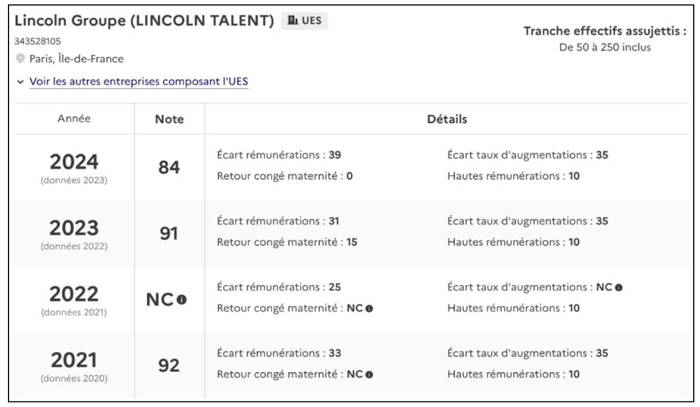

Un usage de l’index aux ambitions fortes
L'index de l'égalité professionnelle entre femmes et hommes constitue un levier central pour inciter les entreprises à évaluer et améliorer l'équité des genres. Il est exploité par divers acteurs, notamment les entreprises, les salariés, les syndicats, les pouvoirs publics, et les chercheurs, chacun trouvant un usage adapté à ses besoins.
Par les entreprises et leurs salariés
Pour les entreprises concernées - toutes les entreprises françaises de plus de 50 salariés - cet index constitue d'abord un outil de diagnostic qui leur permet d’évaluer leur situation en matière d'égalité professionnelle : analyse des écarts de rémunération, d’augmentation, de promotion et d’impacts du congé maternité. En se comparant à la moyenne nationale (88/100 en 2023) et à des entreprises de taille ou secteur similaires, elles peuvent mieux identifier leurs faiblesses et repérer des pratiques exemplaires. Cet outil contribue également à réajuster les politiques internes pour garantir plus d’équité, notamment sur des points comme les augmentations après congé maternité et l’accès aux postes de direction. Cette comparaison leur permet aussi de repérer les meilleures pratiques adoptées par des concurrents ou par des entreprises pionnières en matière d’égalité.
Cependant, des nuances s’imposent. Comme l’a montré l’entretien réalisé avec Anaïs Jacquot-Traxel, Group Talent Manager du cabinet de recrutement Lincoln où elle gère la publication de cet index, les quatre indicateurs obligatoires transmis aux pouvoirs publics ne sont pas toujours les plus pertinents pour chaque entreprise. Typiquement pour Lincoln, il y a la limite du périmètre géographique : le groupe s’étendant dans le monde entier, alors que l’index est limité aux collaborateurs en France. Pour piloter les politiques d’égalité dans le groupe, elle préfère donc regarder d’autres données et indicateurs au niveau de chaque bureau dans chaque zone géographique. De plus, l'index ne tient pas compte des spécificités des métiers où une part importante des rémunérations provient de commissions. Par conséquent, des facteurs externes, tels que la charge mentale qui pèse sur les femmes en âge de s’occuper d’enfants (évoquée pour la première fois par Monique Haicault en 1984), peuvent conduire à des disparités de revenus peu visibles dans des secteurs où le salaire est fixe et les horaires sont rigides. De ce fait, chez Lincoln, les femmes entre 30 et 50 ans sont moins bien rémunérées que leurs homologues masculins notamment car elles se consacrent davantage qu’eux à leur famille : elles « choisissent » donc de s’investir légèrement moins et voient alors leur rémunération être plus faibles. En revanche, l’obligation d’évaluer des tranches d’âge spécifiques a permis à l’entreprise de détecter une inégalité salariale entre les femmes de 30 à 50 ans, un problème passé inaperçu dans leurs indicateurs internes.
Les salariés, les personnes en recherche d’emploi et les syndicats, eux aussi, tirent parti de cet index grâce à la transparence qu’il procure. La publication des scores éclaire l’engagement des employeurs en matière d'égalité femmes-hommes et permet aux salariés d’évaluer la volonté de leur entreprise à promouvoir cette égalité. De même, les personnes en recherche d’emploi peuvent se tourner vers une entreprise plutôt qu’une autre en fonction de ces scores. Cette transparence permet aux syndicats, et notamment au Comité Social et Économique (CSE), de challenger la direction. Ces données deviennent ainsi un argument dans les négociations et facilitent la mise en place d’actions correctives lorsque les scores sont en deçà des attentes.
'Source : https://egapro.travail.gouv.fr/index-egapro/recherche?query=lincoln+talen
Pour comprendre l’impact de l’index, nous avons décidé de faire remplir un questionnaire anonyme à des entreprises (voir annexe) pour avoir leur retour sur Egapro. 20 entreprises nous ont répondu. Nous avons remarqué une cohérence entre l’avis des entreprises sur la pertinence des critères d’évaluation d’Egapro et leurs réponses à la question “Egapro est-il un bon outil ?”. Critères pertinents signifie donc bien pour les entreprises un bon outil.
D’un autre côté, nous ne remarquons pas de corrélation entre la pertinence des critères et l’ajustement des politiques sociales de l’entreprise. Certaines entreprises qui ont amélioré leurs politiques sociales grâce à Egapro ne trouvent pas les critères pertinents et inversement. Globalement, les entreprises sont satisfaites de leur note.
Cette enquête auprès des entreprises nous a donc montré que les avis sur Egapro sont mitigés et que les effets de l’index sur elles sont variés, peu importe la taille de l’entreprise.
Par les pouvoirs publics
Du côté des pouvoirs publics, la publication de cet index permet d’inciter les entreprises à améliorer leurs pratiques et renforcer l’égalité professionnelle. La progression est notable : la note moyenne des entreprises d’au moins 50 salariés est de 88 sur 100 pour l’année 2023. C’est mieux qu’en 2022 (86/100) et qu’en 2021 (85/100). À cet effet, plus de 93 % des entreprises ont une note égale ou supérieure à 75/100.
Ce jeu de données permet également de suivre l’efficacité des politiques publiques visant l’égalité salariale, notamment la loi Avenir professionnel de 2018 et la loi du 24 décembre 2021 visant à accélérer l’égalité économique et professionnelle qui, en plus d’imposer la publication de cet index et les actions correctives, établissent une série de mesures visant à favoriser l’égalité professionnelle entre les femmes et les hommes. L’index permet de mesurer l’impact de ces lois, en mettant en évidence les progrès accomplis, comme l’augmentation de la moyenne nationale ou la hausse de la proportion d’entreprises publiant leur note. De plus, depuis 2022, lorsqu’une entreprise obtient un score inférieur au seuil requis, de 75/100, elle se doit de publier, par une communication externe et au sein de l’entreprise, les mesures de correction définies pour améliorer son index, et donc d’améliorer l’égalité des genres au sein de son entreprise (article L. 1142-9 du code du travail). Tandis que les entreprises ayant obtenu une note globale inférieure à 85 points ont l’obligation de fixer et publier des objectifs de progression de chacun des indicateurs de l’Index (seuil fixé par le décret n° 2022-243 du 25 février 2022).
Par les chercheurs
Enfin, cet index est un atout précieux pour les chercheurs et le grand public. En effet, les chercheurs en sciences sociales et en économie utilisent ces données pour explorer les causes structurelles et les effets des inégalités professionnelles, en s’appuyant sur des tendances nationales et sectorielles. Les études et publications issues de ces recherches contribuent à éclairer les politiques publiques et à enrichir le débat sociétal sur l’égalité salariale, renforçant ainsi la sensibilisation à cette problématique. Par exemple, dans Les entreprises et l’égalité femmes hommes, Dominique Meurs tente d' identifier les mécanismes internes à l’origine du plafond de verre et d’évaluer les réponses politiques à ce problème. Or, pour mener son étude, les données remontées par l’index Egapro lui sont très utiles. En somme, l’index de l’égalité professionnelle joue un rôle crucial en encourageant une dynamique de progrès et de responsabilisation parmi les entreprises, et en offrant aux salariés, aux chercheurs et aux pouvoirs publics un outil pour constater et faire avancer l’égalité salariale.